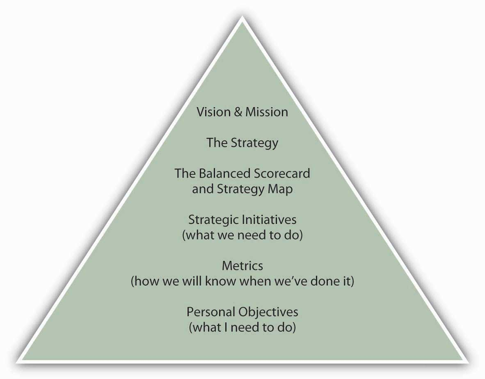
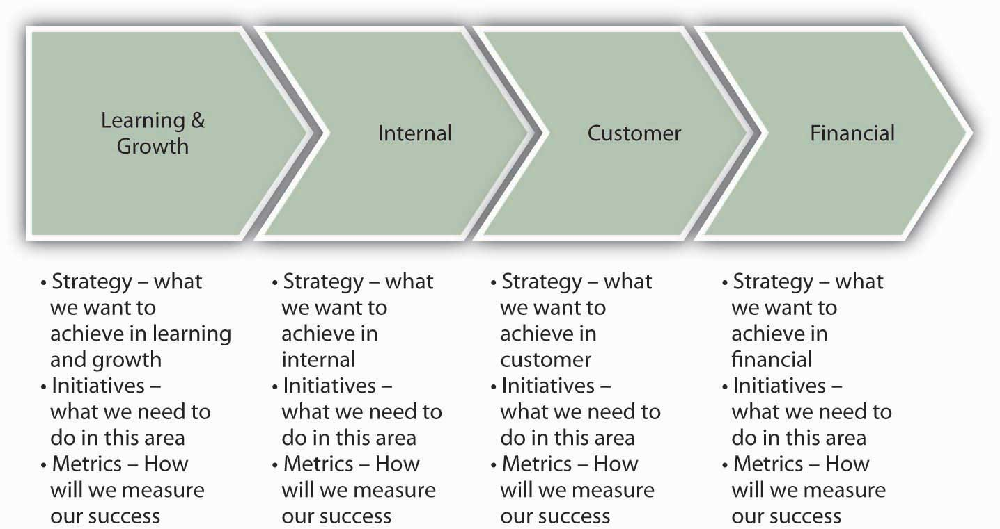

You have probably learned a bit about Balanced Scorecards already from this book or other sources. The Balanced Scorecard was originally introduced to integrate financial and nonfinancial controls in a way that provided a balanced understanding of the determinants of firm performance. It has since evolved into a strategic performance management tool of sorts because it helps managers identify and understand the way that operating controls are tied to strategic controls, and ultimately, firm performance. In this broader sense, a Balanced ScorecardA framework designed to translate an organization’s vision and mission statements and overall business strategy into specific, quantifiable goals and objectives and to monitor the organization’s performance in terms of achieving these goals. is a control system that translates an organization’s vision, mission, and strategy into specific, quantifiable goals and to monitor the organization’s performance in terms of achieving these goals.
According to Robert S. Kaplan and David P. Norton, the Balanced Scorecard approach “examines performance in four areas. Financial analysis, the most traditionally used performance indicator, includes assessments of measures such as operating costs and return-on-investment. Customer analysis looks at customer satisfaction and retention. Internal analysis looks at production and innovation, measuring performance in terms of maximizing profit from current products and following indicators for future productivity. Finally, learning and growth analysis explores the effectiveness of management in terms of measures of employee satisfaction and retention and information system performance.”Kaplan, R., & Norton, D. (2001). The strategy-focused organization. Boston: Harvard Business School Press.
Whereas the scorecard identifies financial and nonfinancial areas of performance, the second step in the scorecard process is the development of a strategy map. The idea is to identify key performance areas in learning and growth and show how these cascade forward into the internal, customer, and financial performance areas. Typically, this is an iterative process where managers test relationships among the different areas of performance. If the organization is a for-profit business like IBM, then managers would want to be able to show how and why the choice made in each area ultimately led to high profitability and stock prices.
Figure 15.11 The Balanced Scorecard Hierarchy
With the scorecard and strategy map in hand, managers then break broad goals down successively into vision, strategies, strategic initiatives, and metrics. As an example, imagine that an organization has a goal of maintaining employee satisfaction in its vision and mission statements. This would be the organization’s vision in the domain of learning and growth, since employee satisfaction is indirectly related to financial performance. Strategies for achieving that learning and growth vision might include approaches such as increasing employee-management communication. Initiatives undertaken to implement the strategy could include, for example, regularly scheduled meetings with employees. Metrics could include quantifications of employee suggestions or employee surveys. Finally, managers would want to test their assumptions about the relationship between employee satisfaction and the downstream areas such as internal, customer, and financial performance. For example, satisfied employees may be more productive and less likely to quit (internal), which leads to better products or services and customer relations (customer), which leads to lower employee recruiting and training costs and greater sales and repeat sales (financial). This sequence of causal relationships is summarized in the following figure.
Figure 15.12 The Strategy Map: A Causal Relationship between Nonfinancial and Financial Controls
Now that you have an understanding of nonfinancial and financial controls, and specific cases such as lean control systems and the Balanced Scorecard, it’s time to apply the notion of the Balanced Scorecard to your personal situation. Recall that the figure shows your position in the context of the Balanced Scorecard—it asks you to state your personal objectives, in the context of the organization’s objectives. However, in developing your own Balanced Scorecard, you will be laying out a road map to achieve your personal and professional objectives (or mission and vision more broadly), which may overlap a lot or very little with the organization’s objectives. While you can choose to focus the scorecard more narrowly on something like your career, you will be much better served by the personal Balanced Scorecard if you pursue a holistic (personal + professional) approach. For example, you may have particular personal goals about financial independence, and this would relate to other choices you might want to make about your personal and professional priorities.
Social psychologist Hubert Rampersad has sought to translate the business Balanced Scorecard into a personal balanced score by providing you with the following four suggestions.Rampersad, H. K. (2006). The personal Balanced Scorecard: The way to individual happiness, personal integrity, and organizational effectiveness. Greenwich, CT: Information Age.
The best way to put these suggestions into action is to work on the scorecard in several sessions, as there is a wide range of factors to consider. Your objective for the first session should be to develop your personal vision statement and list several areas of development in learning, internal, customer, and financial facets of the scorecard. You should be able to fit the scorecard on a single page, for easy and frequent reference. You can use your next session with the scorecard to refine your developmental objectives and set relevant measures and near-term objectives. Post the scorecard where you can refer to it often. And, just as with organizations, if your circumstances change, then that is the critical time to revalidate or revise your personal Balanced Scorecard.
You learned about the essential components of the Balanced Scorecard and saw how, when correctly conceived and implemented, it integrates an organization’s vision, mission, and strategy with its nonfinancial and financial controls. As with correctly implemented nonfinancial controls, the components of the Balanced Scorecard need to be clearly tied to the strategy, and relationships among nonfinancial and financial controls validated. Appropriate control performance targets need to be set, and the appropriate indicators of performance used to gauge nonfinancial and financial performance. This section concluded by outlining for you the steps you might follow in building a personal Balanced Scorecard.